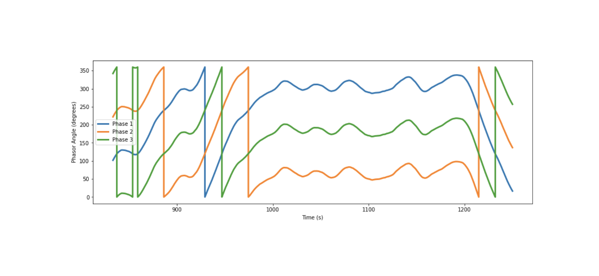
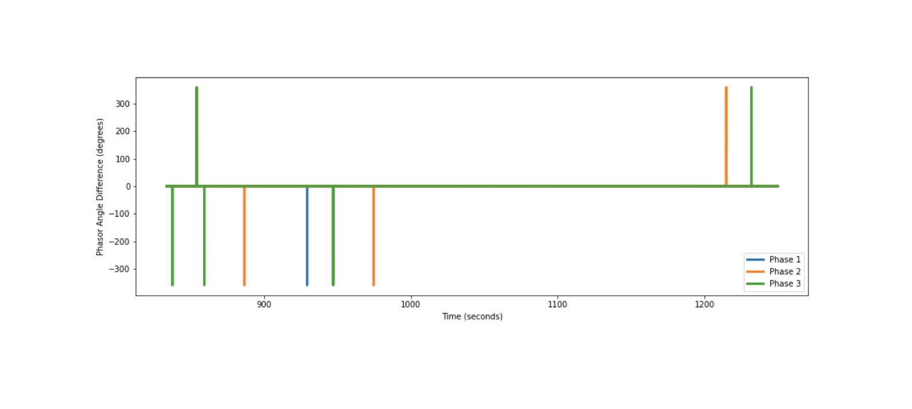
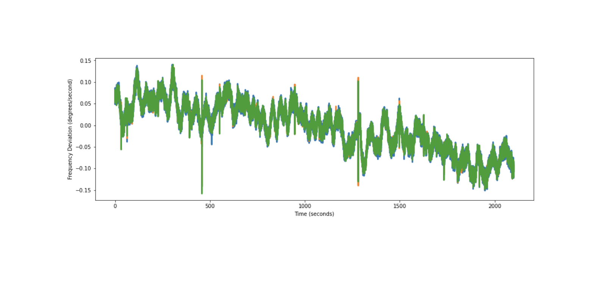
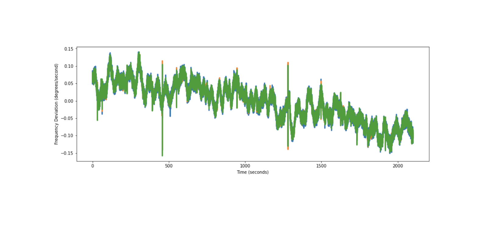
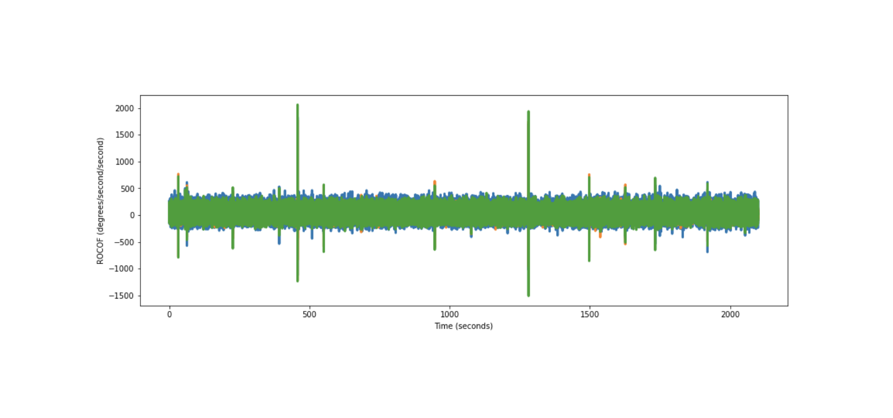
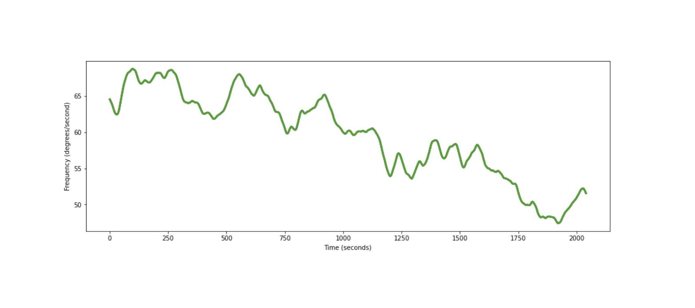
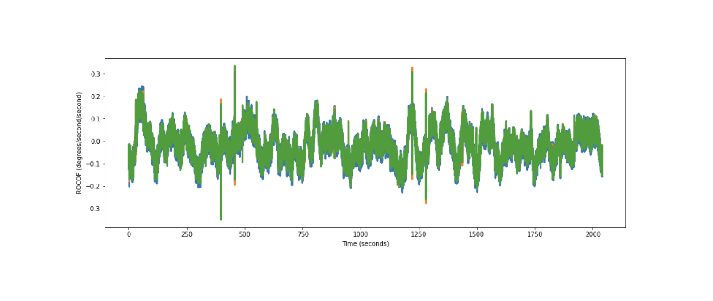
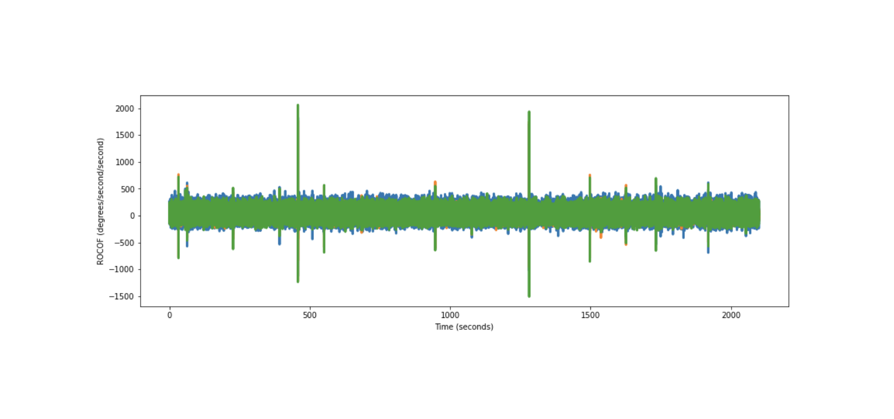
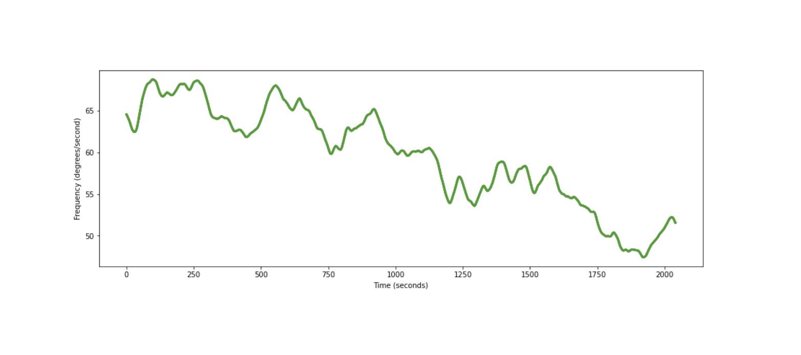
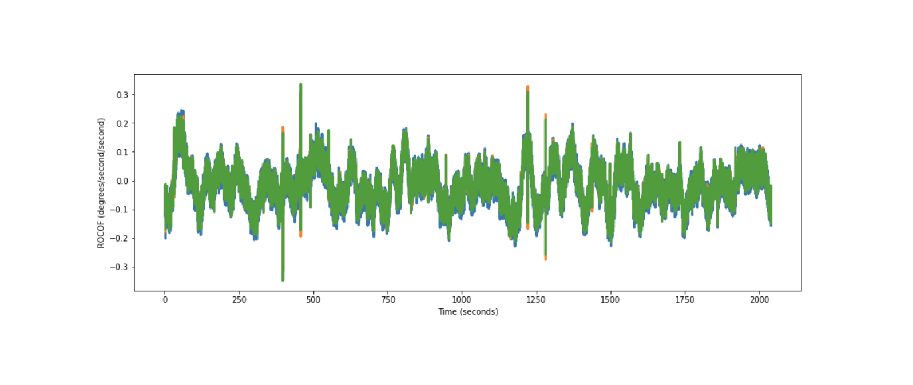

What’s the Angle? (Part 2)¶
Working with PMU Angle Data¶
Author: Miles Rusch
The angle of voltage or current phasors measured by PMUs is an important state variable of transmission and distribution networks. For background on interpreting phasor angle measurements, refer to Part 1 of this blog post.
Since the grid frequency is nominally 60Hz, the raw phase angle of idealized sinusoidal values (as measured relative to a global clock) increases at a rate of 360 degrees per second. To make this measurement more readable, the phase data is stored with the nominal rate removed,and constrained to be between 0 and 360 degrees. As you can see from the plots below, this corrupts the voltage phase derivative with extreme positive values when the angle jumps from 0 to 360.   Before the raw phase angle data can be used for analysis of power system dynamics, it needs to be unwrapped. To unwrap the data, I have written a function, “unwrap_phase”. This function checks the phase for discontinuities by checking the difference of the phase angle stream for values that exceed a predetermined threshold. In this case, a visual inspection of the corrupted derivative indicates that a good threshold would be any value below 359 degrees. However if the threshold value is too small it will trigger when the actual derivative exceeds the threshold, which would corrupt the output.
def unwrap_phase(points, threshold):
derivative = []
times = []
#calculate the sampling period, dt
t0 = points[0].time
t1 = points[1].time
dt = (t1-t0)/1e9 #sampling period in seconds
for i in range(len(points)-1):
times.append((points[i].time-t0)/1e9) #time in seconds
diff = points[i+1].value-points[i].value
if diff > threshold:
derivative.append((diff-360)/dt)
elif diff < -threshold:
derivative.append((diff+360)/dt)
else:
derivative.append(diff/dt)
frequency = np.array(derivative)
#take the integral of frequency to recover phasor angle
angle = np.cumsum(frequency)*dt + points[0].value
return angle, frequency, np.array(times), dt
After processing the raw data with this function, the unwrapped angle and frequency look like:
 
From the unrolled phase angle data we can note a few things. First, the frequency data is centered around 0, which indicates that this data is actually frequency deviation from the nominal frequency of 60Hz. We can easily add the nominal frequency.

From the unrolled phase angle data we can note a few things. First, the frequency data is centered around 0, which indicates that this data is actually frequency deviation from the nominal frequency of 60Hz. We can easily add the nominal frequency.
 Now, plotting the rate-of-change-of frequency (ROCOF), shows that we have added a lot of noise by taking the derivative:

We can filter out the high-frequency noise by taking a moving average filter. Below is a filtered version of the frequency and ROCOF data, where each point comes from a 1-minute average of the original.


Now the ROCOF more clearly shows the variation of the frequency data.
Now, plotting the rate-of-change-of frequency (ROCOF), shows that we have added a lot of noise by taking the derivative:

We can filter out the high-frequency noise by taking a moving average filter. Below is a filtered version of the frequency and ROCOF data, where each point comes from a 1-minute average of the original.


Now the ROCOF more clearly shows the variation of the frequency data.